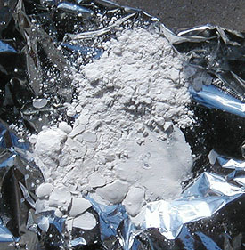

La
silice (arts picturaux)
Accès direct Silice colloïdale -->
cliquer ici
La silice est assez connue pour ses multiples
emplois en sculpture et arts du feu (terre, verre).
Elle l'est moins en tant que produit
auxiliaire en peinture. Il faut dire que les argiles (même le très pur kaolin)
n'ont pas très bonne réputation : elles sont cassantes, font perdre leur
viscosités aux liants, craquèlent, etc.
Et pourtant, Dotapea a pu recenser quatre utilisations de la silice dans de
hauts domaines des arts picturaux et décoratifs :
* l'emploi de terres à diatomées pour la
laque japonaise. Elle sert de charge pour l'impasto ;
* l'emploi de "tripoli"
pour les patines en ébénisterie ;
* l'emploi de "silice
colloïdale" tant en peinture décorative qu'en peinture artistique -
voir ci-dessous ;
* l'emploi de sable
en peinture artistique ou décorative.
Dans chaque cas, ce sont des propriétés très différentes de la silice qui
sont mises à contribution.
Le sable et les autres produits étant traités sur d'autres pages, nous
évoquerons uniquement dans celle-ci la silice colloïdale parce que c'est elle
qui intéresse les peintres en premier lieu.
La silice colloïdale
Son procédé de fabrication aurait été mis au point
par Théodore Schwenk, un spécialiste de l'hydrodynamique contemporaine qui s'est notamment
intéressé à l'argile (information non confirmée à ce jour). Elle se présente
sous la forme d'une poudre très fine (haut de l'image ci-dessous).

L'adjectif "colloïdal"
ne doit pas induire en erreur : il ne s'agit pas d'une "colle de silice". Le
produit montre bien une certaine viscosité à la mise en solution bien
caractéristique des colloïdes, mais s'il n'est pas adjoint d'un liant ou
d'une colle, il retombe en poudre une fois sec (cf. image). Si on le mouille de nouveau,
il retrouve ses propriétés colloïdales.
Ce caractère colloïdal est extrêmement important dans le domaine des
charges pour la peinture. Le problème
des charges "cristalloïdes" - qui sont une majorité -, est qu'elles sont totalement dépourvues de
réaction à leur environnement et "tombent" dans les pâtes de peinture comme
elles tomberaient dans un verre d'eau ou presque, entraînant avec elles
force accidents picturaux. La silice colloïdale est donc une charge
particulièrement intéressante. Par contre, il faut reconnaître qu'elle donne
une pâte certes transparente, mais un peu grisâtre
à sec. Cela empêche de l'employer massivement pour des travaux où
l'on recherche la pureté de la couleur ou la transparence.
D'ailleurs, elle n'est pas toujours employée comme charge : elle est
également présente dans différents médiums et vernis du commerce car elle
présente des vertus spécifiques liées à sa grande
plasticité. Par exemple, le médium cristal pour
peintures à l'huile, simple mélange d'huile d'oeillette et de silice
colloïdale, a une particularité : il conserve les stries
laissées par la brosse.
La silice colloïdale donne à la pâte ou au vernis un aspect
satiné ou mat en fonction des proportions. Elle est un agent matifiant
fort puissant. Elle semble un peu "boire" les liquides et donne vraiment
une pâte "cohérente" bien différente de celle que l'on obtient avec les
cristalloïdes. On sent qu'il y a vraiment conjugaison de propriétés
distinctes et non adjonction d'un produit neutre.
Elle est vendue par certains détaillants spécialistes des produits pour
les arts plastiques, parfois aussi chez les spécialistes de la décoration.
Chimie
Différentes formulations sont signalées, notamment une base
d'acide silicique Si(OH)4 utilisée sous forme de gel en
pharmacologie et sans doute pour d'autres usages liés au corps où l'on
signale soit de faibles acidités, soit la neutralité. De
toute façon, tout dépend de si l'on parle du précurseur ou du résultat. Le
résultat est de la silice non-cristalline, aussi stable, neutre et pratiquement inerte
qu'une vitre ou un verre.
Essayons d'en dire un peu plus sur la nature de ce que l'on
nomme silice colloïdale. Il existe deux façons d'obtenir un colloïde siliceux, les deux
donnant de toute façon de petits agglomérats de SiO2 :
* partir de silice, auquel cas au moment de
la mise en solution le résultat risque d'être décevant car c'est un produit
très peu soluble (le verre ne se dissout pas beaucoup !),
* partir de Si(OH)4 ou d'autres
molécules susceptibles de se ré-agencer d'une manière ou d'une autre en
silice sous la forme d'agglomérats colloïdes. On obtient alors de meilleurs
résultats.
Dans certains cas (notamment la production
d'aérogel), on emploie des combinaisons carbonées (citons le
tétraméthyle orthosilicate ou le tétraéthyle orthosilicate) pour "restituer"
ensuite la silice sous forme colloïde par hydrolyse.
Puis, éventuellement (dans le cas de l'aérogel), on évacue savamment le diluant pour
ne conserver que la silice, structurée d'une manière particulière.
Toxicité :
Attention : cette note ne concerne que le produit destiné aux arts
plastiques et décoratifs, vendu sous forme de poudre.
Il s'agit d'un produit ininflammable. Ses
incompatibilités concernent des produits contenant du fluor ainsi que
certaines solutions d'alcalis peu communes dans un atelier de peinture. Il n'est pas
signalé comme cancérigène ni mutagène. Il est sans grande dangerosité à
condition d'éviter autant que possible de l'inhaler de manière répétitive ou
en fortes quantités.
Parfois, cette silice est à tort considérée comme toxique par confusion
avec les poudres de silice cristalline.
Autres notes :
Cette silice est également employée dans le
domaine du moulage comme épaississant durcissant des résines polyesters, du
plâtre et de l'alginate. Ses applications
sont par ailleurs multiples : on la retrouve en cosmétique, en papeterie, en pharmacologie,
dans l'industrie des abrasifs, des matériaux réfractaires et des textiles.
Une emploi encore plus rare concerne les
aérogels.
Retour
début de page